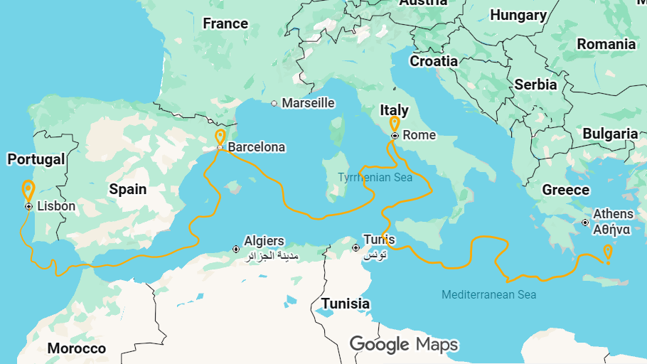
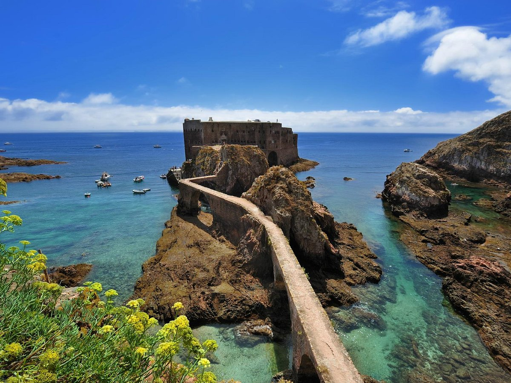
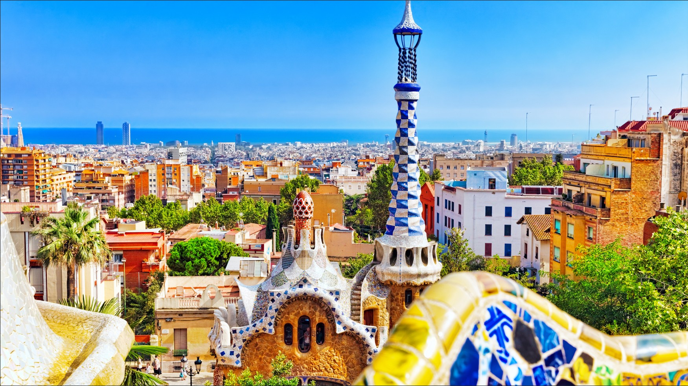
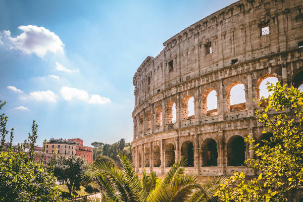
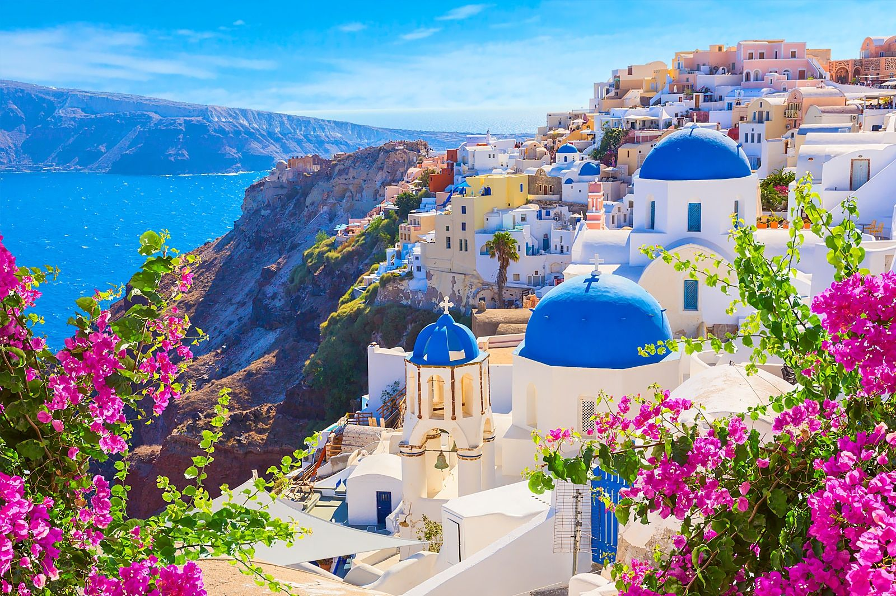

Our Route
12 nights across four stunning Mediterranean destinations.
From the golden shores of Portugal to the iconic white-washed cliffs of Santorini.
Departure
June 14, 2025Duration
12 NightsStops
4 DestinationsReturns
June 26, 2025
Stop by Stop
Lisbon, Portugal

Embarkation · Day 1
Your journey begins in Lisbon, one of Europe's oldest and most charming capitals. Before boarding, explore the winding streets of Alfama, admire the iconic Belém Tower, and soak in the melancholic sounds of traditional Fado music. The ship departs at sunset, with the Tagus River glittering beneath you.
Barcelona, Spain

Days 3–4 · 2 nights
Barcelona is a city that spannever stops surprising. Walk the lively La Rambla boulevard, marvel at Gaudí's extraordinary Sagrada Família, and wander through the Gothic Quarter's medieval alleyways. In the evening, enjoy tapas by the waterfront before returning to your cabin.
Rome (Civitavecchia), Italy

Days 8–9 · 2 days
From the port of Civitavecchia, a short transfer brings you to the Eternal City. Stand in awe before the Colosseum, toss a coin in the Trevi Fountain, and lose yourself in Vatican City. With two full days here, you'll have time to truly fall in love with Rome at your own pace.
Santorini, Greece

Days 11–12 · Final stop
The crown jewel of the Mediterranean. Santorini's iconic blue-domed churches and white-washed villages perched above volcanic cliffs are unlike anywhere else on earth. Watch the legendary Oia sunset, explore the ancient ruins of Akrotiri, and enjoy a glass of local Assyrtiko wine before the ship sets course for home.